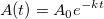
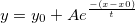
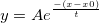
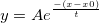

は初期の量、
は初期の量、 は崩壊定数、
は崩壊定数、 は時間です。この場合、 の式はです。
は時間です。この場合、 の式はです。
最終更新日:2015/02/04
一般的に、一次指数減少関数の形式は以下のようになります。

ここで、は初期の量、は崩壊定数、は時間です。この場合、 の式はです。
Originでは、一次指数減少関数(ExpDecay1)は以下のように定義されています。

 とすると、式は  になります。等式は互いに等しいとし、について解くと、
とすると、式は  になります。等式は互いに等しいとし、について解くと、} {t^2}") となります。そのため、半減期の式は次のようになります。
となります。そのため、半減期の式は次のようになります。
 = x_0 + t\ln(2)")
キーワード:指数フィット